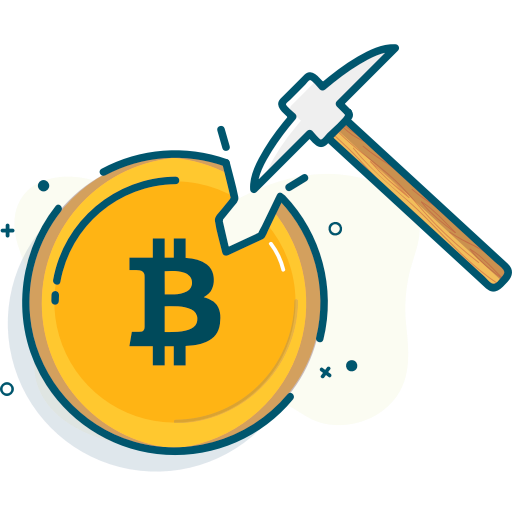
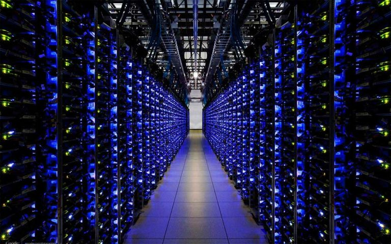

Майнинг

Суть майнинга в том, что компьютеры, находящиеся в самых разных местах по всему миру, проводят вычисления и таким образом генерируют новые блоки блокчейна. Эту систему сравнивают с большой книгой, содержащей все записи о том, что происходит с криптовалютой. Она — платформа, на которой основана работа любой криптовалюты.
Грубо говоря, работа майнеров заключается в том, чтобы подобрать из миллионов комбинаций один-единственный хэш (результат некоего математического преобразования блока) от предыдущего блока — так можно «прикрепить» ещё один блок. За награду одновременно бьётся множество майнеров. Кто сделал это первым — тот и получает награду.
Майнинг самой популярной криптовалюты — биткоина — уже невозможен без специального дорогого оборудования. Если в начале и середине нулевых для этого годился даже домашний компьютер с мощной видеокартой, то сейчас требуются промышленные вычислительные мощности. Дело в том, что биткоинов не может быть больше 21 млн. Большую часть из них уже сгенерировали, и для каждого нового биткоина требуется всё больше мощностей.

Бизнес майнера, по сути, заключается в переработке большого количества электричества в обмен на биткоины.
Простейшая схема майнинга предусматривает установку на компьютер специального программного обеспечения, после чего осуществляется подключение его ресурсов к платежной системе.
Государственные программы майнинга
В настоящее время интерес к различным криптовалютам стал проявляться в некоторых странах на государственном уровне. Следует отметить, что в большинстве развитых государств этот сектор экономики отдан на откуп предпринимателям. Вместе с тем, в КНДР майнинг криптовалют является одной из важных мер по поддержке национальной денежной единицы.
В последние месяцы возник серьезный интерес к виртуальным деньгам, прежде всего, биткоину, и процессу их майнинга у руководителей отечественных государственных органов управления. Некоторые высокопоставленные чиновники неоднократно понимали вопрос о разработке государственных программ майнинга. Однако, говорить о реальном воплощении этих планов в жизнь пока несколько преждевременно.
Майнинг Пулы
Важным принципом работы самой популярной виртуальной платежной системы является случайное распределение эмитированных биткоинов. Для того, чтобы сделать этот процесс более предсказуемым и равномерным, были созданы специальные онлайн-службы, которые получили название майнинг-пулы. Отдельные пользователи предоставляют в их распоряжение имеющиеся вычислительные компьютерные мощности. В конечном итоге полученные в качестве эмиссионного вознаграждения биткоины распределяются между членами пула, исходя из его правил. Особенности программного обеспечения позволяют пользователям работать в пуле намного более эффективно, чем самостоятельно, что привело к широкому распространению подобного типа майнинга.